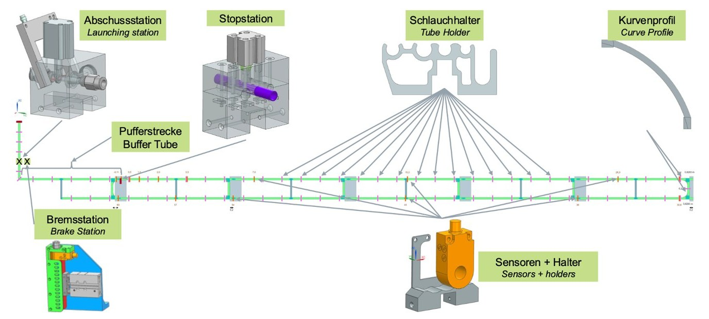

← All projects

Pneumatic Wire Transport (WTE)
FAU – Institute FAPS | since 07/2024 | Graduate research assistant
Stable wire transport at 20 m/s

What?
- As part of Project SIMON at the Institute FAPS, I contributed to an automated pneumatic “shooting” system that replaces manual wire handling and removes assembly bottlenecks for flexible wire components.
How?
- Used Siemens NX for CAD modeling of the experimental setup, including tube holder, stop and brake stations.
- Used FDM and SLA 3D printing for parts with different structural and high-tolerance aerodynamic requirements.
Results
- Achieved stable transport at 20 m/s while keeping a defined state of order for flexible leads.
- Quantified empirical pressure-loss coefficients for industrial-scale pneumatic system modeling.